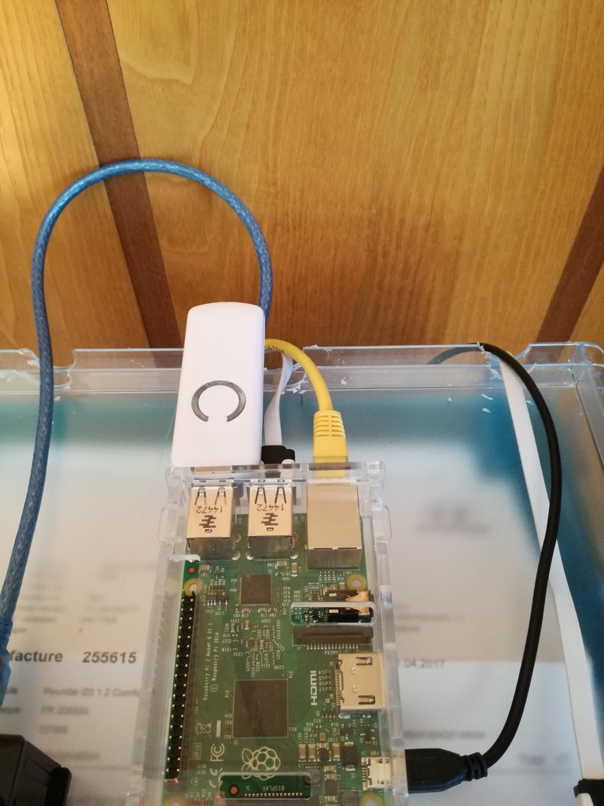
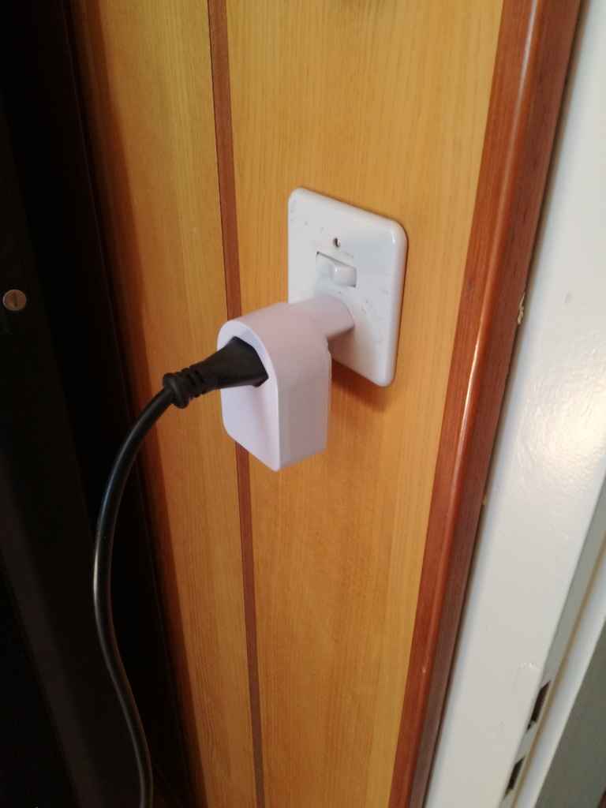
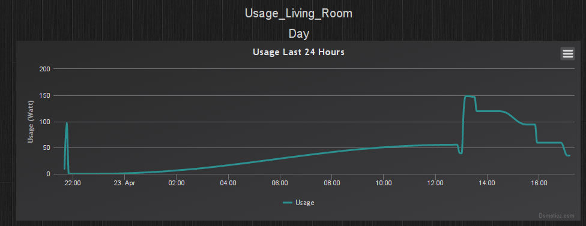

Home Automation: Power Meter and Integration of Zwave into Domoticz
I've improved a bit my home automation installation. It's been a while since the last upgrade, but unfortunately I cannot afford as many upgrades as I would like :P
For a long time I wanted to monitor the power consumption of a few of my appliances in my apartment. Especially my Linux servers so that I could try to improve the consumption and reduce my bill on the long run. Unfortunately, there are very few options for power meter in Switzerland due to the special type of plug we have. The only option I found is a Zwave power plug. For a while, I waited to see if I could find other options because Zwave devices are quite expensive and I would have rather preferred to stay with simpler and cheaper RF-433 appliances. Since I didn't find anything, I ordered a ZWave USB controller from Aeon Labs (the generation 5). I also ordered two Aeon Labs Swiss Smart Plug with power meter.
Here is an image of the Aeon Labs key:
And of the power meter in usage:
Integration of ZWave into Domoticz was extremely easy. I just plugged the USB key, restarted Domoticz (seems necessary for it to pick the new tty) and added new hardware "OpenZWave USB" with the correct serial port. From there, there are two main ways to add new devices. The first is to remove the USB key and use the synchronization button on both the key and the device close to each other. The other way is to use the "Include Node" option on Domoticz and then press the synchronization button on the device to detect the new device. I used the second option since it seemed simpler and it worked perfectly. I did that for my two plugs and it worked fine. Directly after this, 5 new devices were added for each of the plug. One for the voltage, one for the current , two for the usage (I don't know why there is two, but they are both reporting the same value) and one for the switch on/off. I was a bit afraid that only the On/Off part of the smart plug would work on Domoticz, but I had absolutely no problem.
Here is for instance the power usage of last 24 hours on my television system:
For now, I haven't integrated this information on any rule, but I plan to monitor this information in the coming weeks and try to improve my consumption, especially for my servers. I also plan to purchase more of these plugs once my home automation budget can be upgraded.
On another note, I also purchased a Chacon wall remote switch working in RF-433. Although it is quite cheap, I'm very disappointed by the quality of this switch. I add to straighten myself the pins that are attached to the battery because there was no contact. After that, it worked correctly and it is able to work with the RFLink module.
I have to say that I'm quite satisfied with ZWave devices with this experience. Even though I still feel it is way too expensive, it is high quality and have a good finishing. I'll probably purchase more ZWave devices in the future. I'm especially interested in The Aeotec 6 in 1 sensor for temperature humidity, motion, light, UV and vibration. This would allow me to have much information in each room with only one sensor in place of several sensors in each room like I currently have.
I still have a few Milight Bulbs and LEDS to install with a secondary Milight bridge that I will install in the coming week, but I probably won't do a post about this.
Comments
Comments powered by Disqus